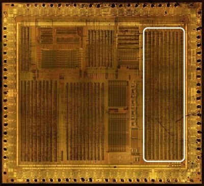
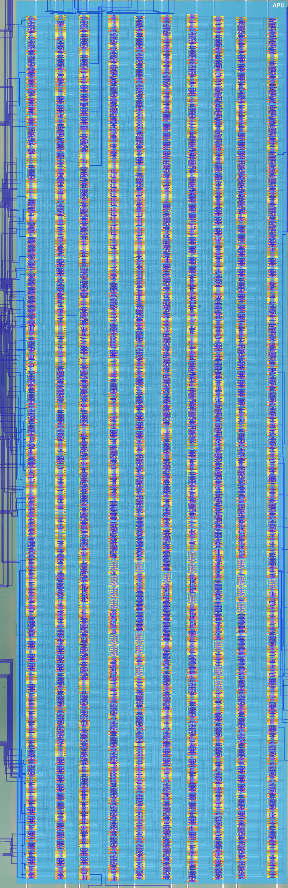
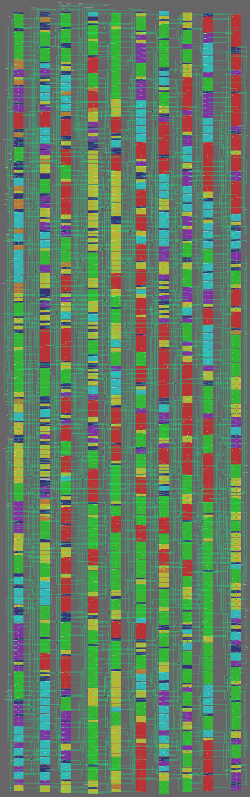
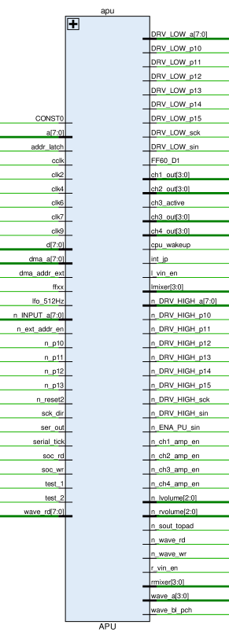

APU
The netlist is now exercised by the Icarus regression suite
(HDL/soc/icarus/apu, issue #398): the register map, the channel 1-4
output stages, the frame-sequencer laws and the mixer/DAC-amp block have
been measured on the real netlist and are documented below. The
suite log / open questions live in
HDL/soc/icarus/apu/STATUS.md; this
wiki page keeps the signal-level overview.

 |
 |
|---|---|
It also contains a piece of arbitration for a[7:0]. 1
Signals

| Signal Name | Direction | From / Where To | Description |
|---|---|---|---|
| CONST0 | Bidir | Global | Constant 0 signal 2 |
| [7:0] a | Bidir | Global | Internal address bus (bits 7:0). Contains a piece of the address bus arbitration 1 |
| addr_latch | Input | From MMIO | Address latch signal (used to latch the external address in TEST1 mode) |
| cclk | Input | From ClkGen | Input clk complement (same as n_clk_in) (Aka AZOF) |
| clk2 | Input | From ClkGen | Clock 2 (Aka DATA_VALID, ADR_CLK_P) |
| clk4 | Input | From ClkGen | Clock 4 (Aka #CPU_PHI, DATA_CLK_N) |
| clk6 | Input | From ClkGen | Clock 6 (Aka INC_CLK_P) |
| clk7 | Input | From ClkGen | Clock 7 (Aka BUKE, LATCH_CLK) |
| clk9 | Input | From ClkGen | Clock 9 (Aka BOGA_1MHZ, MAIN_CLK_P) |
| [7:0] d | Bidir | Global | Internal data bus |
| [7:0] dma_a | Input | From MMIO | DMA address bus (bits 7:0) |
| dma_addr_ext | Input | From MMIO | DMA address (external memory) |
| ffxx | Input | From Arb | FFxx register area indicator (APU registers are at FF10-FF3F) |
| lfo_512Hz | Input | From MMIO | 512 Hz low-frequency oscillator (envelope/frame sequencer clock) |
| [7:0] n_INPUT_a | Input | From Pads | Address bus input value (inverted) from pads a7..a0 |
| n_ext_addr_en | Input | From MMIO | External address enable (active low, TEST1 mode) |
| n_p10 | Input | From P10 Pad | Joypad matrix input (inverted) |
| n_p11 | Input | From P11 Pad | Joypad matrix input (inverted) |
| n_p12 | Input | From P12 Pad | Joypad matrix input (inverted) |
| n_p13 | Input | From P13 Pad | Joypad matrix input (inverted) |
| n_reset2 | Input | From ClkGen | Global reset (active low) |
| sck_dir | Input | From Ser | Serial clock direction (internal oscillator vs external clock) |
| ser_out | Input | From Ser | Serial output data |
| serial_tick | Input | From Ser | Serial clock tick |
| soc_rd | Input | From MMIO | SoC read strobe |
| soc_wr | Input | From MMIO | SoC write strobe |
| test_1 | Input | From MMIO | Test1 mode - disable all internal CPU A/D bus drivers |
| test_2 | Input | From MMIO | Test2 mode - disable the internal Boot ROM |
| [7:0] wave_rd | Input | From WaveRAM | Wave RAM data output |
| [7:0] DRV_LOW_a | Output | To Pads | Drive-low control for address bus (bits 7:0) pads |
| DRV_LOW_p10 | Output | To P10 Pad | Drive-low control for P10 pad |
| DRV_LOW_p11 | Output | To P11 Pad | Drive-low control for P11 pad |
| DRV_LOW_p12 | Output | To P12 Pad | Drive-low control for P12 pad |
| DRV_LOW_p13 | Output | To P13 Pad | Drive-low control for P13 pad |
| DRV_LOW_p14 | Output | To P14 Pad | Drive-low control for P14 pad |
| DRV_LOW_p15 | Output | To P15 Pad | Drive-low control for P15 pad |
| DRV_LOW_sck | Output | To SCK Pad | Drive-low control for SCK pad |
| DRV_LOW_sin | Output | To SIN Pad | Drive-low control for SIN pad |
| FF60_D1 | Output | To MMIO | TEST_PAD register ($FF60) bit 1: DIV clock mode select (0: 16384 Hz, 1: 1 MHz via clk9) |
| [3:0] ch1_out | Output | To DAC | Channel 1 digital amplitude |
| [3:0] ch2_out | Output | To DAC | Channel 2 digital amplitude |
| ch3_active | Output | To WaveRAM | Wave channel (CH3) active enable |
| [3:0] ch3_out | Output | To DAC | Channel 3 digital amplitude |
| [3:0] ch4_out | Output | To DAC | Channel 4 digital amplitude |
| cpu_wakeup | Output | To Core | CPU wake-up from STOP mode |
| int_jp | Output | To MMIO | Joypad interrupt request |
| l_vin_en | Output | To DAC | Left channel VIN (external audio) enable |
| [3:0] lmixer | Output | To DAC | Left mixer: channel routing to the left output (NR51) |
| [7:0] n_DRV_HIGH_a | Output | To Pads | Drive-high control (inverted) for address bus (bits 7:0) pads |
| n_DRV_HIGH_p10 | Output | To P10 Pad | Drive-high control (inverted) for P10 pad |
| n_DRV_HIGH_p11 | Output | To P11 Pad | Drive-high control (inverted) for P11 pad |
| n_DRV_HIGH_p12 | Output | To P12 Pad | Drive-high control (inverted) for P12 pad |
| n_DRV_HIGH_p13 | Output | To P13 Pad | Drive-high control (inverted) for P13 pad |
| n_DRV_HIGH_p14 | Output | To P14 Pad | Drive-high control (inverted) for P14 pad |
| n_DRV_HIGH_p15 | Output | To P15 Pad | Drive-high control (inverted) for P15 pad |
| n_DRV_HIGH_sck | Output | To SCK Pad | Drive-high control (inverted) for SCK pad |
| n_DRV_HIGH_sin | Output | To SIN Pad | Drive-high control (inverted) for SIN pad |
| n_ENA_PU_sin | Output | To SIN Pad | SIN pad pull-up enable (active low) |
| n_ch1_amp_en | Output | To DAC | Channel 1 amplifier enable (active low) |
| n_ch2_amp_en | Output | To DAC | Channel 2 amplifier enable (active low) |
| n_ch3_amp_en | Output | To DAC | Channel 3 amplifier enable (active low) |
| n_ch4_amp_en | Output | To DAC | Channel 4 amplifier enable (active low) |
| [2:0] n_lvolume | Output | To DAC | Left volume (active low, NR50) |
| [2:0] n_rvolume | Output | To DAC | Right volume (active low, NR50) |
| n_sout_topad | Output | To SOUT Pad | Serial output to pad (inverted) |
| n_wave_rd | Output | To WaveRAM | Wave RAM read (active low) |
| n_wave_wr | Output | To WaveRAM | Wave RAM write (active low) |
| r_vin_en | Output | To DAC | Right channel VIN (external audio) enable |
| [3:0] rmixer | Output | To DAC | Right mixer: channel routing to the right output (NR51) |
| [3:0] wave_a | Output | To WaveRAM | Wave RAM address bus (16 bytes) |
| wave_bl_pch | Output | To WaveRAM | Wave RAM bitline precharge |
Annotated Design

Netlist & functional modules (issue #398)
The extracted netlist (HDL/soc/apu.v) is one flat module: ~1330 cells
(286 not, 124 notif0, 116 nor, 108 dffr, 101 latchr_comp, 89 cnt, 88 and,
73 nand, ... 1 const), i.e. the DMG-CPU "APU pool" of standard cells.
Simulation on the merged netlist (apu_merged.v, a/d bus aliases) splits
it into the following functional blocks, with the measured behaviour:
| Block | Evidence / notes |
|---|---|
| Register file $FF10-$FF2F | 8-bit read/write map measured per address (see table below). Decode clocks follow soc_wr (buffered net w188); level-sensitive latchr_comp cells capture the d-bus at the FFxx write window close. |
| Wave-RAM window $FF30-$FF3F | decoded inside the APU: w695 = FF30-3F window, n_wave_wr = ~(soc_wr & w695), n_wave_rd = sample clock (ch3 playing) or soc_rd & w695 (CPU read); wave_a = sample counter while ch3 plays, else a[3:0]. |
| CH1/CH2 square generators | output period = (2048 - X) * 32 oscillator cycles (X = NR13/NR14 or NR23/NR24) - the DMG 131072/(2048-X) relation: 11-bit divider at clk9 (= osc/4), 8-step duty pattern. Duty table 12.5/25/50/75% and NRx2 volume plateau measured on chN_out. |
| CH3 wave generator | wave-RAM address steps every (2048 - X) * 2 osc (sample rate 2^21/(2048-X)); amplitude = sample scaled by NR32 (100/50/25%/mute); DAC enable NR30 bit7. |
| CH4 noise generator | LFSR output at NR42 volume; NR43 divisor scaling measured (exact divider ratio cross-check open). |
| Frame sequencer (lfo_512Hz) | envelope volume step every 8*rate lfo pulses (rate/64 s at 512 Hz; rate 0 = off); length counter tick = 2 lfo pulses (256 Hz) and a trigger reloads it with 0x40 - L (the DMG quirk: sounds (64-L)/256 s); sweep cadence detail open. |
| Mixer / DAC amp | NR51 low nibble -> right (SO1) mixer bits, high nibble -> left (SO2); NR50 volumes -> active-low n_lvolume/n_rvolume + vin enables (bits 7/3); n_ch*_amp_en follow channel run / NR52 power. |
Register file (measured read-back semantics)
| Addr | Register | read = |
|---|---|---|
| $FF10 | NR10 | 0x80 | (v & 0x7F) |
| $FF11 | NR11 | 0x3F | (v & 0xC0) |
| $FF12 | NR12 | v (8-bit echo) |
| $FF13 | NR13 | no read-back (0xFF) - feeds the divider |
| $FF14 | NR14 | 0xBF | (v & 0x40) |
| $FF16-$FF1E | NR21-34 | same pattern (NR22/NR32 8-bit echo where readable; freq-lo no read-back) |
| $FF24 | NR50 | v |
| $FF25 | NR51 | v |
| $FF26 | NR52 | 0x70 | (power<<7) | (ch-active<<0); power-off write resets the APU |
| $FF27-$FF2F | - | unmapped |
| $FF30-$FF3F | WaveRAM | byte read/write through the APU decode |
Serial / joypad / a-arbitration pieces
Per the SoC overview, the APU pool also holds the pieces closest to the
pads: the $FF00 write decode w570 captures d0..d7 into the p10-p15 /
serial pad-driver latches (DRV_LOW_p1x/n_DRV_HIGH_p1x, n_sout_topad,
sck/sin pad drivers) and the a[7:0] arbitration (TEST1: addr_latch +
dma mux g1066..g1073 select the external/DMA address; bufif0
g1081..g1099 read the pad inputs onto the internal bus when
n_ext_addr_en is low). Dedicated tests for these paths are open (see
STATUS.md).
Simulation notes
The static Icarus model needs the apu_wc.v bus-model variant: five
divider-state drivers enabled by the w548 decode (g869/g937/g939-941)
are open during CPU writes and fight the write data (x) which the
level-sensitive preset latches otherwise capture - see make_wc.py /
STATUS.md for the full root cause.
Map
| Row | Cells |
|---|---|
| 1 | not, dffr, not, not, dffr, dffr, mux, mux, bufif0, nor, mux, not, bufif0, bufif0, not, bufif0, cnt, not, not, mux, not, not3, not, not, not, dffr, not2, not2, not, not2, nor, not3, not, latch, mux, nand, not6, mux, mux, not3, latch, latch, mux, latch, not, not, mux, latch, latch, latch, latch, mux, mux, or4, or, not, dffr, not, or4, not, nand4, not, not, dffr, and, dffr, dffr, dffr, nand5, not, mux, nor6, and, latch, not, and, nand4, and4, not6, not2, nor, and, and, and, and, and, and, nand, and, and, and, and, nor, dffsr, notif0, notif0, notif0, notif0, not2, notif0, notif0, and, nor, and, nor, and, or, not, nor, dffsr, not3, latchr_comp, not3, latchr_comp, latchr_comp, nor, not, not4, not2, latchr_comp, notif0, notif0, notif0, not, notif0, notif0, notif0, notif0, not2, nor, not, notif0, dffr, dffr, not2, not2, notif0, notif0, not2, notif0, notif0, latchr_comp, latchr_comp, notif0, latchr_comp, not2, latchr_comp, notif0, latchr_comp, notif0, and, and |
| 2 | not, not, not, mux, not, not, not, not2, nor, dffr, not, dffr, not, nand_latch, bufif0, not2, nand, not, not, latchr_comp, latchr_comp, and, not, notif1, cnt, latchr_comp, latchr_comp, notif1, not, notif1, and, mux, and, nor3, and, not6, dffr, not, not, notif1, not, notif1, nand, nor, or3, not, and, bufif0, not, latchr_comp, latchr_comp, nand, dffr, bufif0, nand, nor, and, nand, nor, nand, not6, not, not, nand, not, notif0, not, not, nand, not2, or, nor, not2, nor, not, not, cnt, cnt, not, not3, not, dffr, dffr, not, not6, nand, not, not, latchr_comp, not, or, not, not, or, nand, nand, notif0, nor, not, not, or4, nand, nor, and, not, not, not, nor, nand, not, nand, or, not, const, not3, not, not, notif0, not2, notif0, mux, and, nor, not, not2, nand, mux, dffsr, not3, nand, and, nor, and3, and, nand, nor, dffr, and3, latchr_comp, latchr_comp, latchr_comp, dffr, nand3, dffr, not2, dffr, cnt, nand, not, nand, not, not, not, latchr_comp, latchr_comp, latchr_comp, latchr_comp, latchr_comp, latchr_comp, notif0, notif0, latchr_comp, latchr_comp, latchr_comp, not2, not2, not2, latchr_comp, notif0, and, and |
| 3 | not, dffr, not, dffr, not, not, not, dffr, nor, not, nand, nor, not2, not, latchr_comp, latchr_comp, muxi, latchr_comp, latchr_comp, muxi, not, not, cnt, not, not, not, nor, nand, not, not, cnt, dffr, nor, cnt, cnt, nor, nand, not3, nor, notif0, not, notif0, dffr, dffrnq_comp, mux, not, nor, nor, not, cnt, not, and, notif0, nor, nor, nor, nor, latchr_comp, nor, not, not, nor, cnt, cnt, not, and, nor3, dffr, not, not, not, nor3, notif0, cnt, not, and, not, notif0, cnt, dffr, cnt, and, nor_latch, dffr, not, and, not, not, not, nand, cnt, not, fa, not, not, not, xor, xor, cnt, and3, cnt, not, cnt, not, not3, not, not, not, dffr, dffr, and3, not, cnt, cnt, not, notif0, not, dffr, notif0, notif0, not, notif0, notif0, notif0, notif0, not, and, and, notif0, notif0, not, not, latchr_comp, latchr_comp, not, and, or, nand5 |
| 4 | nor_latch, not4, nor, not, dffr, nor, dffr, not, cnt, dffr, muxi, cnt, muxi, aon22, and, notif1, not, notif1, and, notif1, not, not2, not2, not2, nand4, and4, nand4, nand4, nand4, nand4, nand4, nand4, nand4, nand4, nand4, not2, nor, nand4, nand4, not2, nand, nor, nor, nand, nor, nor, not, not, nor, nor, not, nor, nor, not, and, and, not, dffrnq_comp, dffr, nor, nand, nor, nor, not, dffrnq_comp, aon2222, not, latchr_comp, nor, not, nor, not, not, nor3, and, not, dffr, not, nor_latch, nand, not2, not, not, nor, not, nor, and, not, nand, nand, latchr_comp, notif0, cnt, nand, or, not, not, notif0, notif0, nand, notif0, and, not2, not, dffsr, cnt, cnt, not, dffr_comp, nand, dffr_comp, dffr_comp, dffr_comp, fa, xor, dffr_comp, dffr_comp, xor, fa, nor, not, not, and, nor3, nor, nor, dffr, not, dffr, dffr, dffr, nor3, nor3, aon2222, dffr, nand, dffr, dffr, dffr, not2, dffr, and, or, not, nor5 |
| 5 | dffr, nor, dffr, dffr, dffr, dffr, dffr, aon222, aon222, cnt, not2, nand, not, latchr_comp, not, not, not, not, cnt, nand4, and4, and, and, and, nand4, nand4, nand4, nand4, nand4, nor, nor, not6, not2, and, nand, aon22, and, aon2222, and, and, nor, nand5, nor5, nand, cnt, and, and, dffrnq_comp, not, dffr, nand, and, nor, nor, and, nand, latchr_comp, or3, dffr, notif0, latchr_comp, latchr_comp, latchr_comp, and, nor, and3, not2, cnt, nor, cnt, not, cnt, nor, not, dffsr, dffsr, nand, not, dffr_comp, fa, dffsr, dffsr, dffr_comp, dffr_comp, nor, and, not3, dffr_comp, nor, nor, nor, nor, not, cnt, not3, dffr, dffr, not2, aon222222, nor3, nor3, nor3, nor3, nor, or, nor_latch, dffr, nor3, nor3, aon2222, and, aon22, or, dffr, aon22, aon22, mux, or |
| 6 | not, and, dffr, not, nor, notif0, and, notif0, notif0, notif0, notif0, dffr, nor, not, notif0, notif0, notif0, notif0, latchr_comp, latchr_comp, latchr_comp, latchr_comp, latchr_comp, cnt, nor, notif0, or, nor, not, not2, not, not, nand, latchr_comp, cnt, not, aon22, cnt, nor5, latchr_comp, cnt, not, aon22, cnt, not, nand, nor_latch, or3, cnt, nand, cnt, not, cnt, dffr, cnt, not, not, nor3, nor_latch, dffr, notif0, cnt, and, dffr, not, notif0, dffr, and, and, nor, cnt, nor, dffsr, dffr_comp, fa, dffsr, dffsr, not, xor, dffsr, not, dffr, nand_latch, cnt, not3, nor, nand, not, nand, not, not, dffr, mux, latchr_comp, latchr_comp, nor3, or3, not, not2, dffr, aon22, cnt, or3, cnt, cnt, cnt |
| 7 | nand_latch, nor3, not, nor3, dffr, not, dffr, dffr, not, not, nor_latch, not, latchr_comp, not, nor3, not, dffr, nor, nor, nor, not, not, notif0, cnt, cnt, not, not, cnt, latchr_comp, latchr_comp, latchr_comp, nor, nand4, nor, nor, not, latchr_comp, latchr_comp, not, latchr_comp, latchr_comp, notif0, notif0, notif0, or, and, aon22, notif0, not, or, not, or, not, not, nand, notif0, not, not, not, nor3, not, and, not, and, notif0, cnt, and, nor3, not, cnt, cnt, cnt, not, not, not, latchr_comp, notif0, notif0, not, dffr, nand, nor, notif0, cnt, nand, nor, nor, not, nand, and, nand, not, nand_latch, not, not, not, dffr_comp, dffr_comp, fa, dffr_comp, xor, fa, nand, mux, xor, xor, xor, not, dffsr, nor4, dffr, not, not, not, nor, dffr, not, dffr, nor3, or, and, latchr_comp, not2, latchr_comp, notif0, notif0, notif0, latchr_comp, latchr_comp, latchr_comp, notif0, latchr_comp, nor5, latchr_comp, not2, not, notif0, nor_latch, not, nor, nor, and, dffr |
| 8 | nor, or, nor, not, and, nor, not, dffr, notif0, dffr, not, or3, nor4, nor, nor, cnt, cnt, notif0, cnt, and, not, notif0, notif0, latchr_comp, latchr_comp, and, nand, not2, notif0, notif0, notif0, latchr_comp, latchr_comp, not, latchr_comp, and3, notif0, notif0, or, notif0, notif0, not, nand, dffr, not, not, not, or, and, dffsr, notif0, notif0, notif0, or, nand, latchr_comp, not2, notif0, dffsr, notif0, nor5, notif0, aon22, cnt, cnt, aon22, cnt, cnt, aon22, cnt, cnt, dffsr, nand5, nor5, fa, not, dffsr, not, dffsr, fa, dffr_comp, nand, xor, nand, nand, dffr_comp, not, dffr_comp, nor, not3, not, nor_latch, nor, not, not, nor, latchr_comp, dffr, not4, dffr, not, nor, notif0, dffr, not2, and, notif0, notif0, or, nand, nor, not, dffr, notif0, or, dffr, xnor, not, and3, dffr |
| 9 | not, not, cnt, notif0, notif0, nor_latch, latchr_comp, latchr_comp, latchr_comp, notif0, dffr, not, notif0, notif0, notif0, notif0, notif0, latchr_comp, latchr_comp, latchr_comp, cnt, cnt, cnt, nor3, and, not, not, latchr_comp, latchr_comp, not, and, latchr_comp, latchr_comp, not, latchr_comp, dffr, latchr_comp, not, latchr_comp, latchr_comp, notif0, notif0, notif0, nand, not, cnt, latchr_comp, latchr_comp, latchr_comp, latchr_comp, latchr_comp, notif0, or, aon22, not, not, not, dffr, dffr, notif0, cnt, dffsr, cnt, fa, fa, dffr_comp, not, nor, dffr_comp, dffr_comp, or, dffr_comp, dffsr, not, dffsr, dffsr, dffr, dffr, and, and, dffr, dffr, dffr, nand_latch, latchr_comp, latchr_comp, latchr_comp, not, dffr, latchr_comp, nand, cnt, cnt, not, cnt |
| 10 | cnt, cnt, not, not, not, not, cnt, notif0, cnt, not, cnt, cnt, notif0, not, not, cnt, and3, cnt, notif0, notif0, cnt, cnt, latchr_comp, and, not, not2, not, latchr_comp, not, latchr_comp, not, not, bufif0, not, not, and, not, not, dffr, nor3, not, cnt, not, and3, cnt, not2, muxi, dffr, dffr, dffr, nand, nor, and, nor, nand, dffr, nand, nor, nand, nor, or, notif0, notif0, latch, not, not, notif0, notif0, cnt, dffr, nor, nand, nor, not, nand, nand, nor, nor, dffr, nand, nor, and, dffr_comp, not, or4, nor4, or3, nand, nor, not, nand, nor, xor, not, nor_latch, dffr, nand, nor, nor, not, not, and, not, and, nor, nor, or, latch, notif0, not2, or, not3, latch, notif0, not, not6, latch, notif0, not, dffr, or, not, dffr, not, dffr, dffr, not, aon22, not, notif0, dffr, notif0, not, or, not, nand, notif0, notif0, not, not, notif0 |
-
The chip is topologically arranged so that the address bus arbitration is divided into three parts: in arb, in mmio, and in apu, to equalize wire lengths. ↩↩
-
The constant 0 is globally scattered throughout the chip. Each large module with cells has a
constcell whose output 0 is globally connected between all modules (so the input is marked as Bidir). ↩